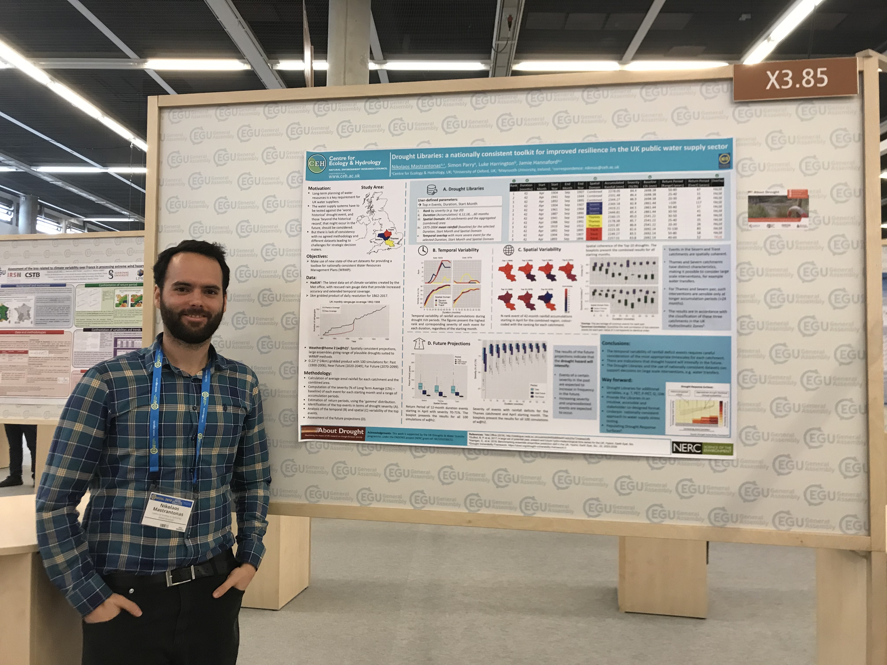

Hydrology (droughts, floods, water resourcee)
Throughout human history, regardless of time and place, human societies strongly rely on water. Strong deviations in the expected quantity, quality, or timing of water can play a pivotal role in the development of societies.
During the past years, I have mainly researched on statistical hydrology, focusing on water extremes. Most of this research was conducted while working as Research Associate Hydrologist at the UK Centre for Ecology & Hydrology (UKCEH).
I have investigated the water availability for current and future climatic conditions in the UK, contributing to the development of a drought catalogue that can be used for supporting decision making in the water sector (ENDOWS). I also analysed meteorological and hydrological droughts in Thailand (STAR), India, and sub-Saharan Africa (SUNRISE), with the use of standardized indices.

Climate change and its implications on floods is of great interest for the society, and within this topic, I have researched on long-term changes in discharges worldwide, with a focus on the UK rivers.
Finally, at UKCEH I was also contributing to operational aspects, participating in the seasonal forecasting (Hydrological Outlook) and the hydrological summary (NHMP) of the UK rivers.
Selected publications
Mastrantonas, N., Parry, S., Harrington, L., Hannaford, J., Drought Libraries: a nationally consistent toolkit for improved resilience in the UK public water supply sector, Geophysical Research Abstracts Vol. 21, EGU2019-9550, 2019 EGU General Assembly 2019 https://doi.org/10.13140/RG.2.2.19753.21602
Mastrantonas, N., Hannaford, J., Harrigan, S., Parry S., Long-term changes in UK flooding: evidence from the ‘NRFA Peak Flow’ version 6 dataset, BHS 13th National Symposium 2018 https://doi.org/10.13140/RG.2.2.24786.38080
Bouziotas, D., Deskos, G., Mastrantonas, N., Tsaknias, D., Vangelidis, G., Papalexiou, S.M., Koutsoyiannis, D., Long-term properties of annual maximum daily river discharge worldwide, Geophysical Research Abstracts Vol. 13, EGU2011-1439, 2011 EGU General Assembly 2011 https://doi.org/10.13140/RG.2.2.13643.80164